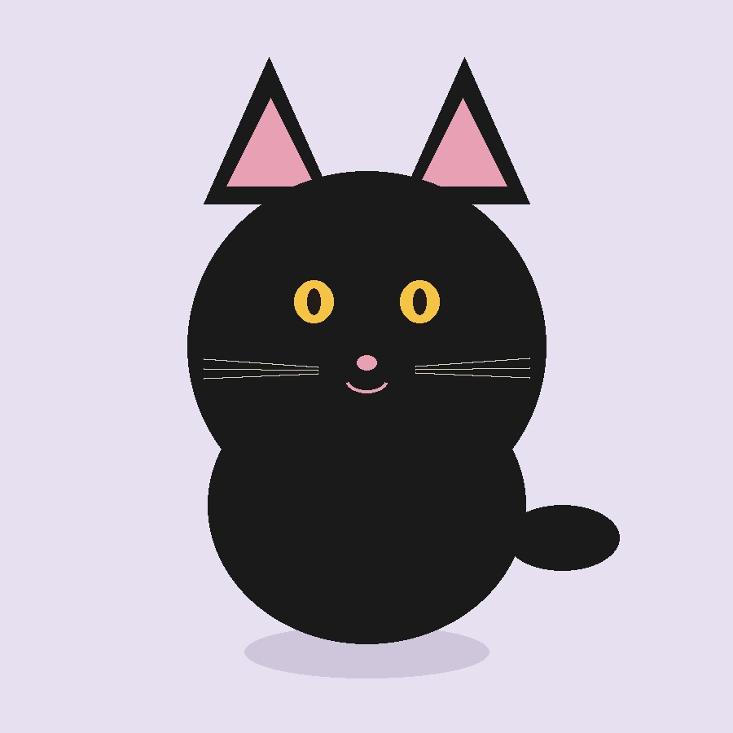

PROCURA-SE
Thor
- Raça e porte
- Vira-lata, grande
- Cor
- Caramelo
- Onde
- Centro — Campinas
- Data
- 18/10/2026
- Observação
- Sem coleira. Manso, pode estar assustado.
Filtre por situação ou prenda um cartaz novo. A foto enviada é lida no seu navegador e não sai deste computador.
Nenhum cartaz nesta situação. Troque o filtro ou cadastre um pet.

